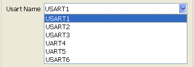
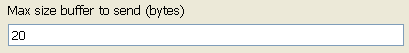

USART send model
Model used to send a char string using USART1 to USART6.
Contents
S-Function
Nb Input: 2
- Nb2Send : Number of char to send.
- SendVal : Buffer of data to send. Sized paramter size.
Nb Output: 1
NbSent : Number of data sent.

Usart Name
Set USART name.

Max size buffer to send
Size of SendVal input buffer

Example
Send char string to PC HyperTerminal using USART3.
This example is based on STM3240G-EVAL board.
Analog-to-digital converter (ADC3) reads potentiometer value from PortF-Pin9.
This value is converted into char string and sent through USART3. Open USART example

USART3 configuration must be the same as PC HyperTerminal one.

Send value using USART3